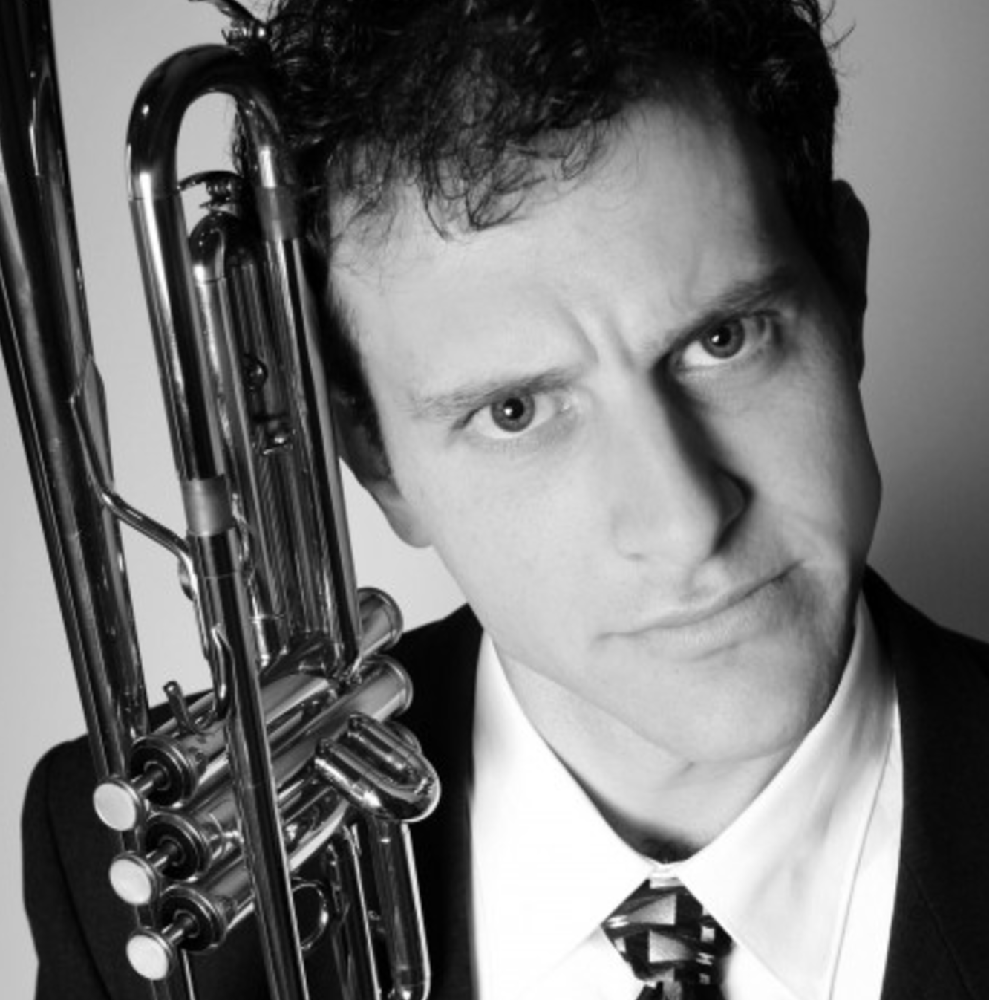

About:
Andy was born in Atlanta, GA and raised from the age of 1.6 in the Denver area. He was interested primarily in artistic endeavors from an early age. He was very fortunate to have parents who were agressively supportive providing art classes and materials ranging from trumpets to airbrush rigs.
In high school, Andy had the privilege of learning from a true master of the art of band. He was inspired and encouraged to pursue the trumpet as a career. This led Andy to join the Denver Blue Knights drum and bugle corps where he became not only a performer, but a featured soloist. Andy quickly rose in the ranks to occupy several different leadership roles.
Andy attended CU, Boulder for a music education degree which he abandoned for a trumpet performance degree. Andy never received a degree. While still a mere 7 credits shy of this accomplishment, he was hired on as a performer in the Tony award winning show "Blast!" where he achieved another featured role as the "Everybody Loves the Blues" soloist.
Ever since graduating high school, Andy has been teaching and composing music for high school marching bands and drum corps all over the US and Japan.
- 7 years as the brass caption head of the Denver Blue Knights
- Currently teaches the Carolina Crown drum & bugle corps
- Worked for many years as a theatrical stagehand for Local 1 in NYC
- 2 years as a broadcast producer specializing in audio, RF, and music licensing for Livestream in NYC
Andy is equally excited and nervous to be participating in Galvanize Denver's G64 web coding 6 month immersive bootcamp in an effort to further his career into more technical realms while still maintaining opportunities to grow and develop as an artist & designer.
Andy is a Denver Broncos fan!
Learn about Andy's daughter, Cordelia!